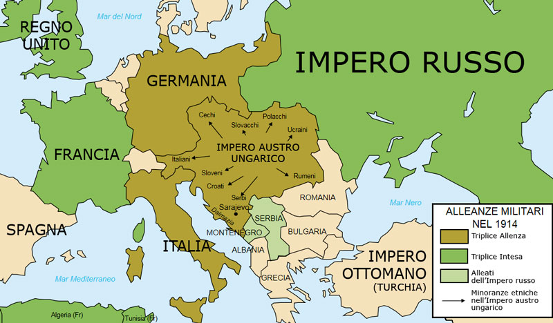
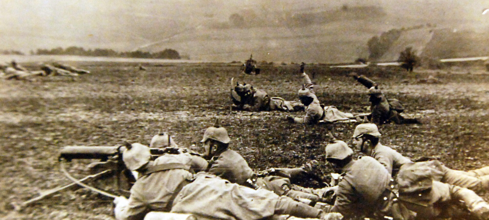

La Prima Guerra Mondiale (1914 - 1918)
Durante l'anno scolastico abbiamo svolto diverse attività e affrontato molti temi storici, ma lo studio della Prima Guerra Mondiale è stato senza dubbio uno degli argomenti che mi sono piaciuti di più. Mi ha colpito molto approfondire non solo le dinamiche politiche e militari, ma anche il drammatico impatto che questo conflitto ha avuto sulla società dell'epoca, segnando il passaggio definitivo verso il mondo moderno.
Le Causes e lo Scoppio del Conflitto
Le tensioni in Europa si accumulavano da anni a causa del nazionalismo esasperato, dell'imperialismo e della corsa agli armamenti. Il continent era diviso in due grandi blocchi: la Triplice Intesa (Gran Bretagna, Francia e Russia) e la Triplice Alleanza (Germania, Impero Austro-Ungarico e Italia). La scintilla scoccò il 28 giugno 1914 a Sarajevo con l'assassinio dell'arciduca Francesco Ferdinando per mano di un nazionalista serbo, attivando una reazione a catena di dichiarazioni di guerra.
La Guerra di Trincea e le Nuove Tecnologie
Fallito il piano tedesco di una rapida "guerra di movimento", il conflitto si trasformò in una logorante guerra di posizione. Per quattro anni, milioni di soldati vissero all'interno di fossati scavati nel terreno (trincee), affrontando fango, malattie e costanti bombardamenti. La Grande Guerra fu un conflitto fortemente tecnologico, caratterizzato dall'uso di mitragliatrici, gas tossici, primi carri armati, aerei e sottomarini.
La Svolta del 1917 e la Fine del Conflitto
Il 1917 fu l'anno decisivo: la Russia si ritirò a causa della rivoluzione interna, mentre gli Stati Uniti entrarono in guerra a fianco dell'Intesa, portando un enorme rifornimento di risorse economiche e industriali. Nel 1918 le potenze centrali crollarono. L'Impero Austro-Ungarico firmò l'armistizio con l'Italia dopo la decisiva vittoria italiana a Vittorio Veneto, e l'11 novembre 1918 la Germania firmò la resa definitiva.

